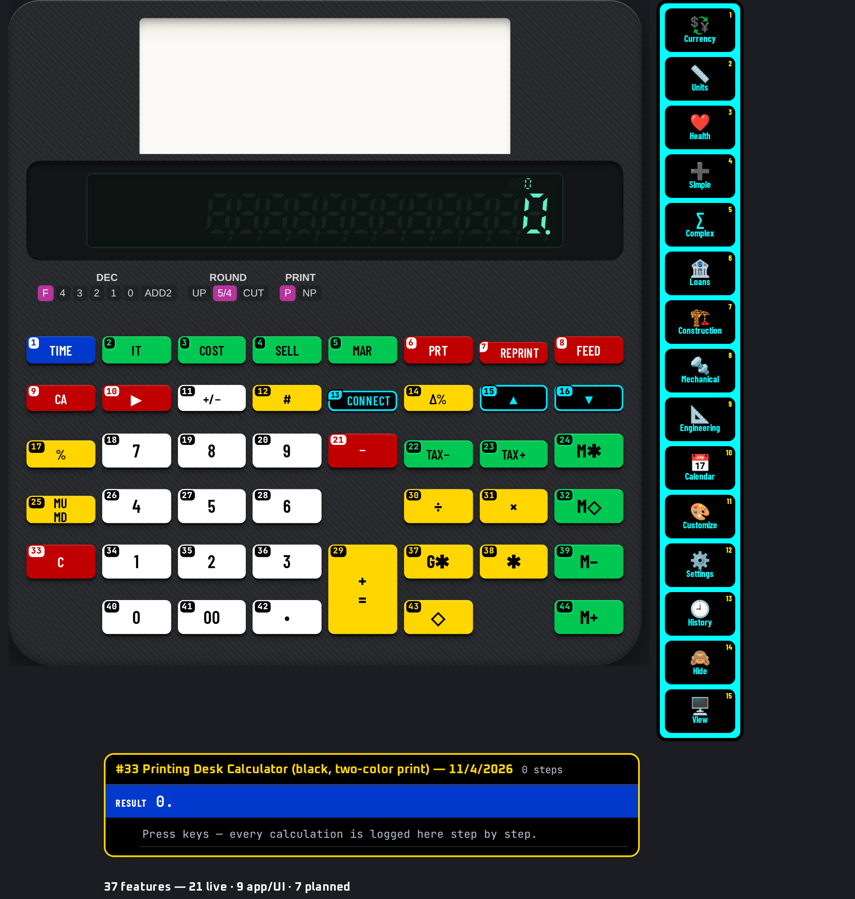

This manual belongs to the U-45 CALCULATORS app and describes calculator #33 — Printing Desk Calculator (black, two-color print) exactly as it behaves in the app. Every worked example and every drill answer in this book was run on the app's own keys by an automated checker before printing; only results that matched were kept.
Keys are written as a chip showing the key number and its face, for example #1 TIME. Numbers follow the numbering printed on the keys (switch it on with “# On”). A shifted function is written as two chips: the shift key, then the key that carries the function.
adding-machine logic (+= and −= post amounts to the tape; ◇/T totals).
Open U-45 CALCULATORS, choose #33 from the home screen (or the jump list at the top), and the calculator appears with its numbered, colour-coded keys. Click or tap keys, or type on a keyboard.
Every key carries a small number in the same reading order as this manual (left→right, top→bottom; the navigation pad counts ▲ ▼ ◀ ▶ then its centre). Use “# On / # Off” in the bar above the calculator to show or hide them — the setting is remembered.
Keys are coloured by job: white = digits, yellow = operators/execute, blue = functions, green = memory/variables, red = clear/delete/power, black with cyan = shift/modes/menus/navigation. Press “Classic” to return to the original model colours and “Hi-Contrast” to come back.
Display text uses the U45 Display face, key legends use U45 Keys (a condensed face that stays readable on small keys) and key numbers / helper text use U45 Mono. All three are bundled inside the app, so they work offline.
The Copy button copies exactly what the display shows (indicators that are switched off are skipped) so you can paste a result into a message or spreadsheet.
Fit scales the calculator to your screen; 1:1 shows it at its design size. On a phone, Fit is the comfortable choice.
Reset rebuilds this calculator from scratch: display, memory, stack and modes return to their start-up state. Use it before each worked example in this manual.
On a computer you can type: digits, + − * / ^ ( ), Enter or = to execute, Backspace to delete, Esc to clear, arrows to move. Letters reach common functions (see the Keyboard shortcuts chapter).
Hover over (or long-press) a key to see “#number name”.
A cyan icon rail on the right of every calculator opens 15 panels: Currency (166 currencies, rates auto-updated from open.er-api.com or Frankfurter when online and cached with a date; the bundled dated snapshot is used offline), Units (exact SI factors), Health (published formulas, not medical advice), Simple, Complex, Loans, Construction, Mechanical and Engineering (30+ numbered tools each), Calendar generator, Customize (26 options, saved per calculator), Settings (31 options), History, Hide and View. On narrow phones the rail shows icons only.
Every calculation is logged per calculator with a date and time. Open History on the rail to search, re-use (types the input back into the calculator), copy, delete one, select several and delete, or delete all (asks for confirmation). History is stored encrypted on this device (AES-GCM); exporting it needs the passcode.
The green CS button between Restore and Social reads a problem from the camera, a photo, a PDF or a text file. Recognition (Tesseract OCR, English) runs offline on the device; an online language download is only used if you switch it on in Settings. Check and edit the recognised text, then Solve shows the steps offline. OCR is not available when the app is opened as a plain file:// page in a browser.
The layout selector between Fit and # offers Auto plus 12 layouts: 3D classic, 3D high-contrast, Classic, Pocket, Compact, Expanded, Desktop wide, Split, One-hand left, One-hand right, Large print and Minimal. Auto picks one for your screen and your choice is remembered per calculator. The View panel hides the top bars, the tool bar, the rail or everything (full screen); the round yellow ⤢ button at bottom-left (or Esc) always restores the normal view.
The Hide panel lists every button, rail icon and section of this calculator as tick boxes. Hiding is instant; unhiding asks for the app passcode.
Right-click, drag and long-press saving of images is blocked inside the app. Saving or sharing an image export (PNG, JPG, QR, calendar), printing a calendar, and downloading or sharing the app itself ask for the passcode, and exported images carry a U-45 watermark. Honest note: this cannot stop a screenshot or screen recording made by the operating system or another device.
U-45 CALCULATORS is an offline app: after the first load everything — including fonts — comes from the device.
| Colour | Group | Keys on this model |
|---|---|---|
| num | Digits & number entry | #11, #18, #19, #20, #26, #27, #28, #34, #35, #36, #40, #41, #42 |
| op | Operators & execute | #12, #14, #17, #25, #29, #30, #31, #37, #38, #43 |
| fn | Functions | #1 |
| mem | Memory, variables & registers | #2, #3, #4, #5, #22, #23, #24, #32, #39, #44 |
| clr | Clear, delete & power | #6, #7, #8, #9, #10, #21, #33 |
| mod | Shift, modes, menus & navigation | #13, #15, #16 |
37 features: 21 live on the keys, 9 app/UI features, 7 planned (documented but not yet working — they are clearly marked and never used in examples).
Calculator #33 with key numbers shown (Hi-Contrast colours).
“Shift” = 2nd / f / SHIFT layer; “Alpha” = ALPHA layer; “3rd” = 3rd / g layer. A dot means the layer is empty on that key.
| # | Face | Shift | Alpha | 3rd | Group |
|---|---|---|---|---|---|
| 1 | TIME | · | · | · | fn |
| 2 | IT | · | · | · | mem |
| 3 | COST | · | · | · | mem |
| 4 | SELL | · | · | · | mem |
| 5 | MAR | · | · | · | mem |
| 6 | PRT | · | · | · | clr |
| 7 | REPRINT | · | · | · | clr |
| 8 | FEED | · | · | · | clr |
| 9 | CA | · | · | · | clr |
| 10 | ▶ | · | · | · | clr |
| 11 | +/− | · | · | · | num |
| 12 | # | · | · | · | op |
| 13 | CONNECT | · | · | · | mod |
| 14 | Δ% | · | · | · | op |
| 15 | ▲ | · | · | · | mod |
| 16 | ▼ | · | · | · | mod |
| 17 | % | · | · | · | op |
| 18 | 7 | · | · | · | num |
| 19 | 8 | · | · | · | num |
| 20 | 9 | · | · | · | num |
| 21 | − | · | · | · | clr |
| 22 | TAX− | · | · | · | mem |
| 23 | TAX+ | · | · | · | mem |
| 24 | M✱ | · | · | · | mem |
| 25 | MUMD | · | · | · | op |
| 26 | 4 | · | · | · | num |
| 27 | 5 | · | · | · | num |
| 28 | 6 | · | · | · | num |
| 29 | += | · | · | · | op |
| 30 | ÷ | · | · | · | op |
| 31 | × | · | · | · | op |
| 32 | M◇ | · | · | · | mem |
| 33 | C | · | · | · | clr |
| 34 | 1 | · | · | · | num |
| 35 | 2 | · | · | · | num |
| 36 | 3 | · | · | · | num |
| 37 | G✱ | · | · | · | op |
| 38 | ✱ | · | · | · | op |
| 39 | M− | · | · | · | mem |
| 40 | 0 | · | · | · | num |
| 41 | 00 | · | · | · | num |
| 42 | • | · | · | · | num |
| 43 | ◇ | · | · | · | op |
| 44 | M+ | · | · | · | mem |
Every key on calculator #33, in number order, with every function it carries in this app.
11 examples, each run on this calculator's keys by the U-45 checker. Follow the chips in order.
Calculate 15 % of 80. Press Reset first.
#19 8 → #40 0 → #31 × → #34 1 → #27 5 → #17 %
Display shows 12. — expected 12. ✔ verified on the app.
The percent key turns the second number into a percentage of the first.
Calculate 125 + 48 − 19, total. Press Reset first.
#34 1 → #35 2 → #27 5 → #29 +
= → #26 4 → #19 8 → #29 +
= → #34 1 → #20 9 → #21 − → #38 ✱
Display shows 154. — expected 154. ✔ verified on the app.
Each amount is posted with its sign; the total key prints and clears the running total.
Calculate 12 × 15. Press Reset first.
#34 1 → #35 2 → #31 × → #34 1 → #27 5 → #29 +
=
Display shows 180. — expected 180. ✔ verified on the app.
Multiplication is completed with the +=/= key, as on desk adding machines.
Calculate 144 ÷ 12. Press Reset first.
#34 1 → #26 4 → #26 4 → #30 ÷ → #34 1 → #35 2 → #29 +
=
Display shows 12. — expected 12. ✔ verified on the app.
Division is completed with the +=/= key.
Calculate 40 + 60 (subtotal), + 25, total. Press Reset first.
#26 4 → #40 0 → #29 +
= → #28 6 → #40 0 → #29 +
= → #43 ◇ → #35 2 → #27 5 → #29 +
= → #38 ✱
Display shows 125. — expected 125. ✔ verified on the app.
The subtotal key prints the running total without clearing it; the total key prints and clears.
Calculate 200 + 15 %. Press Reset first.
#35 2 → #40 0 → #40 0 → #31 × → #34 1 → #27 5 → #17 % → #29 +
=
Display shows 230. — expected 230. ✔ verified on the app.
× then % works out the percentage part; the + key then adds it to the base (price plus percentage).
Calculate 200 − 15 %. Press Reset first.
#35 2 → #40 0 → #40 0 → #31 × → #34 1 → #27 5 → #17 % → #21 −
Display shows 170. — expected 170. ✔ verified on the app.
× then % works out the percentage part; the − key then takes it off the base.
Calculate 30 as a % of 120. Press Reset first.
#36 3 → #40 0 → #30 ÷ → #34 1 → #35 2 → #40 0 → #17 %
Display shows 25. — expected 25. ✔ verified on the app.
÷ then % gives the first number as a percentage of the second.
Calculate change from 80 to 100. Press Reset first.
#19 8 → #40 0 → #14 Δ% → #34 1 → #40 0 → #40 0 → #14 Δ%
Display shows 25. — expected 25. ✔ verified on the app.
Δ% is pressed after the old value and again after the new value; a fall shows as a negative percentage.
Calculate cost 60, sell 80 → margin %. Press Reset first.
#28 6 → #40 0 → #3 COST → #19 8 → #40 0 → #4 SELL
Display shows 25. — expected 25. ✔ verified on the app.
Enter cost with COST and selling price with SELL — the margin is worked out as profit ÷ selling price.
Calculate 3 × 12 + 5 × 8 (memory total). Press Reset first.
#36 3 → #31 × → #34 1 → #35 2 → #44 M+ → #27 5 → #31 × → #19 8 → #44 M+ → #24 M✱
Display shows 76. — expected 76. ✔ verified on the app.
M+ finishes each line and adds it to memory; M✱ (memory total) recalls the sum and clears memory.
Type an amount then +=; type the next amount then += … finally ✱ prints the total.
◇ prints a running subtotal without clearing.
Use 00 / 000 for round amounts.
Set the rate once with the rate keys; then TAX+ adds it to any amount.
COST, SELL, MAR solve for the missing one of cost, selling price and margin.
ADD2 places the decimal point for you (type cents only).
Use Appendix B (function finder): look up the function, read its key number, then find that number on the keypad. Numbers run left→right, top→bottom from #1 to #44.
20 keys on this model have a keyboard shortcut (see chapter 7). Typing digits and operators is much faster than clicking.
Estimate first (round each number) and compare with the display. If the answer is 10× or 100× off, a decimal point or percent key was missed.
Press Copy in the bar above the calculator to put the display text on the clipboard instead of retyping it.
Hi-Contrast colours use black/white/yellow/blue/green/red with black or white text for maximum contrast; key numbers stay on in both colour schemes.
With the calculator open on a computer, these physical keys press the numbered keys below (Ctrl/Alt/⌘ combinations are left to the browser). Shifted functions are reached by clicking the shift key first.
| Keyboard | # | Key | Does |
|---|---|---|---|
| Escape | #9 | CA | CA — clear all (including accumulator) |
| Backspace Delete | #10 | ▶ | Backspace — delete the last digit typed |
| ArrowUp | #15 | ▲ | Tax rate ▲ — increase the tax rate setting |
| ArrowDown | #16 | ▼ | Tax rate ▼ — decrease the tax rate setting |
| % | #17 | % | % — percent (with + / − gives add-on / discount) |
| 7 | #18 | 7 | Digit 7 |
| 8 | #19 | 8 | Digit 8 |
| 9 | #20 | 9 | Digit 9 |
| - | #21 | − | Subtraction − |
| 4 | #26 | 4 | Digit 4 |
| 5 | #27 | 5 | Digit 5 |
| 6 | #28 | 6 | Digit 6 |
| + Enter = | #29 | += | += — add the entry to the accumulator (adding-machine logic) |
| / | #30 | ÷ | Division ÷ |
| * x | #31 | × | Multiplication × |
| 1 | #34 | 1 | Digit 1 |
| 2 | #35 | 2 | Digit 2 |
| 3 | #36 | 3 | Digit 3 |
| 0 | #40 | 0 | Digit 0 |
| . , | #42 | • | Decimal point. Pressing it first gives “0.”; a second point in the same number is ignored |
| “# On / # Off” | show / hide key numbers |
| “Classic / Hi-Contrast” | switch key colours |
| “Copy” | copy display text |
| “Fit / 1:1” | scale to screen / design size |
| “Reset” | restart this calculator |
| Jump list | switch to another of the 45 calculators |
Adding machines use ✱ for total and ◇ for subtotal; += adds entries.
If 1234 shows as 12.34, the ADD2 slide is on.
Check the RATE annunciator; the default rate may not be yours.
Old values (memory, stack, open brackets, worksheet values) can leak into the next calculation. Press Reset or clear before starting a new problem.
A shift / 2nd indicator that is still lit will turn the next key into its shifted function. Look at the display indicators before pressing.
Work each one on calculator #33, then check your keys and the answer in Appendix A. Every answer was produced by this calculator.
Without looking at the table, find each key on the picture. Answers in Appendix A.
| Function | Label | Keys |
|---|---|---|
| # — non-add (print a reference number) | # | #12 |
| % — percent (with + / − gives add-on / discount) | % | #17 |
| += — add the entry to the accumulator (adding-machine logic) | += | #29 |
| ◇ — subtotal (print, keep running) | ◇ | #43 |
| ✱ — total (print and clear) | ✱ | #38 |
| Backspace — delete the last digit typed | ▶ | #10 |
| C — clear the entry | C | #33 |
| CA — clear all (including accumulator) | CA | #9 |
| Change sign (+/−) of the number being typed or the current result | +/− | #11 |
| COST | COST | #3 |
| Decimal point. Pressing it first gives “0.”; a second point in the same number is ignored | • | #42 |
| Digit 0 | 0 | #40 |
| Digit 1 | 1 | #34 |
| Digit 2 | 2 | #35 |
| Digit 3 | 3 | #36 |
| Digit 4 | 4 | #26 |
| Digit 5 | 5 | #27 |
| Digit 6 | 6 | #28 |
| Digit 7 | 7 | #18 |
| Digit 8 | 8 | #19 |
| Digit 9 | 9 | #20 |
| Division ÷ | ÷ | #30 |
| Double zero — types “00” in one press (fast entry of amounts) | 00 | #41 |
| FEED — paper feed (blank line) | FEED | #8 |
| GT — grand total | G✱ | #37 |
| IT — item count | IT | #2 |
| M+ — add the value to independent memory M | M+ | #44 |
| M− — subtract the value from memory M | M− | #39 |
| M◇ — memory subtotal (recall) | M◇ | #32 |
| M✱ — memory total (recall and clear) | M✱ | #24 |
| MAR — margin % | MAR | #5 |
| MU — mark-up / mark-down | MUMD | #25 |
| Multiplication × | × | #31 |
| Printed label only (no action in this app) | CONNECT | #13 |
| PRT — print the display on the tape | PRT | #6 |
| REPRINT — reprint the last calculation | REPRINT | #7 |
| SELL | SELL | #4 |
| Subtraction − | − | #21 |
| Tax rate ▲ — increase the tax rate setting | ▲ | #15 |
| Tax rate ▼ — decrease the tax rate setting | ▼ | #16 |
| TAX+ — add tax at the set rate | TAX+ | #23 |
| TAX− — remove tax | TAX− | #22 |
| TIME — print the time | TIME | #1 |
| Δ% — percent change | Δ% | #14 |
Two-colour printing desk calculator with on-screen paper tape (negative values in red). Adding-machine logic (+= / − accumulate, ✱ total, ◇ subtotal), item count, memory M+ M− M◇ M✱, grand total G✱, MU/MD mark-up, COST/SELL/MAR margin, TAX+/TAX− (rate: hold the ▲/▼ keys to change, default 8 %), Δ%, decimal (F 4 3 2 1 0 ADD2) and rounding (UP 5/4 CUT) slide switches, non-add/date print (#), REPRINT and FEED. TIME/DATE use the system clock; CONNECT (PC link) is a no-op.
U-45 CALCULATORS models are independent software recreations; they are not affiliated with any calculator manufacturer and carry no third-party trademarks.
| #1 TIME | #2 IT | #3 COST |
| #4 SELL | #5 MAR | #6 PRT |
| #7 REPRINT | #8 FEED | #9 CA |
| #10 ▶ | #11 +/− | #12 # |
| #13 CONNECT | #14 Δ% | #15 ▲ |
| #16 ▼ | #17 % | #18 7 |
| #19 8 | #20 9 | #21 − |
| #22 TAX− | #23 TAX+ | #24 M✱ |
| #25 MUMD | #26 4 | #27 5 |
| #28 6 | #29 += | #30 ÷ |
| #31 × | #32 M◇ | #33 C |
| #34 1 | #35 2 | #36 3 |
| #37 G✱ | #38 ✱ | #39 M− |
| #40 0 | #41 00 | #42 • |
| #43 ◇ | #44 M+ |
U-45 CALCULATORS · Calculator #33 · cut out and keep